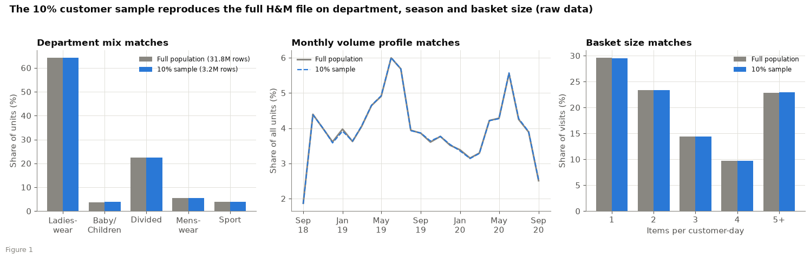
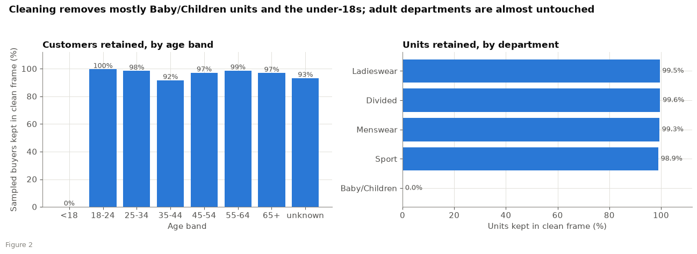

| Group number | M |
| Deliverable code / version | D2 / v1 |
| Date | 3 November 2026 |
| Lead owner for this deliverable | C. Prashanth |
| Term | Term 5, 6 October to 20 November 2026 |
| Members | C. Prashanth (BA05015) Arpan Shah (BA05009) Ambarish Sengupta (BA05007) |
| Linked outcomes | CO2, CO6 |
| Dataset version audited | data-v1.0 (cleaned H&M 10% customer sample); Fashion-MNIST (public, used only for the image model) |
Sparta is a free digital wardrobe for men. With each user's consent, anonymised and aggregated wardrobe, purchase and wishlist data goes to brands and retailers to support two decisions: which categories, colours and fits to add to a range (primary), and how much stock to commit by category (secondary). The app also gives each user outfit suggestions from their own wardrobe, made by a recommendation engine: style rules decide which outfits are allowed and a ranking step orders them (business requirements BR-50 to BR-55). The process flow in the project repository (flow-diagrams/sparta_process_flow.png) shows both sides.
The pilot has not produced data yet. This audit therefore covers the data the team uses before the pilot: the public H&M Personalized Fashion Recommendations files, which stand in for purchase behaviour and seasonal demand (charter D1, Table 4), and the public Fashion-MNIST pictures, which train the small image model of the recommendation engine. It states what the files contain, what we changed, and where they cannot stand in for Sparta's own users. The same audit will be repeated on the first Sparta pilot extract.
| Source | Role in the project | Status in this audit |
|---|---|---|
| H&M articles, customers and transactions | Proxy for purchase behaviour and seasonality; checks the demand and gap methods before pilot data exists | Audited and cleaned (sections 2 to 6) |
| Fashion-MNIST (Zalando Research) | 70,000 small greyscale garment pictures that train the image model suggesting a category for photo items; holds no purchase, brand, price or personal data | Source record in Table 2a and Appendix A8; not cleaned or used for demand |
| Sparta pilot app data (primary source) | Items, purchases, wishlist and outfits entered by consenting users | Not yet available; audit repeated on the first extract; consent rules in section 3 |
| Synthetic records in the Sparta schema | Pipeline and script tests only | Used only to test clean_hm.py; never used for results |
| Item | Detail |
|---|---|
| Dataset | H&M Personalized Fashion Recommendations (H&M Group, 2022): articles.csv (105,542 rows, 25 columns), customers.csv (1,371,980 rows, 7 columns) and the transactions file (31.8 million rows, 5 columns: date, customer, article, price, sales channel; 20 September 2018 to 22 September 2020). |
| Where from | Kaggle competition page, downloaded with a team member's Kaggle account after accepting the competition rules. |
| Licence or permission | Competition rules: use for non-commercial research and education. The team uses it only for this course and does not redistribute the raw files. |
| Date accessed | October 2026, before 27 October 2026, the date of the first audit run on the files. |
| Working sample | transactions_train_sample10pct.csv: all purchases of a random 10% of customers, 3,205,663 rows from 136,670 customers. A reference profile of the full 31.8 million rows (department, channel and monthly counts, purchases per customer, basket size) is kept so the sample can be tested against the whole file (section 5). |
| Where it is kept | Team members' machines only. Raw and cleaned row-level files are not committed to the public Sparta repository (size and licence). Each run records SHA-256 checksums of inputs and outputs in MANIFEST.json (section 7). |
| Item | Detail |
|---|---|
| Dataset | Fashion-MNIST (Xiao, Rasul and Vollgraf, 2017), published by Zalando Research: 70,000 greyscale pictures, 28 by 28 pixels, of single garments in ten types (T-shirt/top, Trouser, Pullover, Dress, Coat, Sandal, Shirt, Sneaker, Bag, Ankle boot). Held as two CSV files: fashion-mnist_train.csv (60,000 rows) and fashion-mnist_test.csv (10,000 rows), each with a label and 784 pixel columns. Checked: every type has 6,000 training and 1,000 test pictures. |
| Licence | MIT licence (Zalando SE). The notice is kept with any copy and the paper is cited in the model card. |
| Date accessed | The files carry a 2019 file date; they were copied into the project on 29 October 2026. The original download date was not recorded. |
| Integrity | SHA-256 of both files is recorded in data/recommendation-engine/README.md (train 6e94982a…fd94b7f, test 85ef50a3…a2bc01). |
| Use and limits | Trains a small image model (once, before the pilot) that suggests a category and sub-type for photos of clothes. It has no colour, brand, price or purchase information and no information about which garments go together, so it cannot teach outfit compatibility; that comes from the style specialist's rules. Pictures are studio-style, so accuracy on phone photos is tested on team-owned photos before use (BRD risk RK-8). |
| Personal data | None: pictures of products only. |
| Where it is kept | Team members' machines only. Not committed to the Sparta repository (size; .gitignore). |
H&M data. The files carry no names or contact details. Customer identifiers and postal codes are hashed by the publisher. We use the data only for this course (non-commercial research and education), which is the purpose the competition rules allow. We do not try to identify anyone, and we never link H&M customers to Sparta users. We apply data minimisation: the postal-code column is never loaded, free-text product descriptions are not used, and only seven article columns and six customer columns are read. Customers under 18 are removed before analysis. Raw files stay on team machines and are deleted when the course ends; only aggregated results are kept.
Sparta pilot data. The Digital Personal Data Protection Act, 2023 (Government of India, 2023) expects a clear notice of what is collected and why, and consent that is free and specific (sections 5 and 6), and it sets stricter rules for children's data (section 9). Sparta's design follows these points: invitation-only adults in supported countries, a first-login pilot notice that every user must accept to join the study, a Leave the pilot button that deletes the account and data, minimum group sizes of 10 before any figure reaches a vendor, and no use of participant data to train or tune machine-learning models (business requirements BR-28 and BR-52). The recommendation engine's image model is trained once, before the pilot, on the public Fashion-MNIST pictures and tested on photos of the team's own clothes. The wording is in the Privacy Policy and the legal pack in the project repository. This statement is the team's own reading of the Act. No professional legal review has taken place, and one is required before any public or commercial launch.
Missing values, duplicates and outliers were checked on the raw files before any change. Table 3 shows each finding, the treatment chosen and the reason. The same rules run in clean_hm.py and in the D3 notebook.
| # | Finding (raw data) | Treatment | Why |
|---|---|---|---|
| 1 | 296,434 exact duplicate transaction rows (9.2% of the sample): same customer, day, article, price and channel. The file has no quantity column. | Keep. Collapse to one line with a quantity, so units are preserved. | Identical rows are most likely two units bought together, so dropping them would understate basket size. |
| 2 | Baby/Children department: 3.8% of units. | Exclude. | The buyer is dressing someone else, so the purchase says nothing about their own wardrobe. |
| 3 | Non-apparel product groups (cosmetics, furniture, stationery, "Unknown" and similar): 0.3% of units. | Exclude. | Not part of an outfit. |
| 4 | 913 sampled customers under 18 (9,553 of all 1,371,980 customers, aged 16 or 17). | Exclude their purchases. | Sparta serves adults only. |
| 5 | Age above 90: 5 sampled customers (77 overall; maximum 99). | Set age to missing, keep the customer. | Likely default values, not real ages. |
| 6 | Missing demographics, whole customer file: FN flag 65.2%, Active flag 66.2%, age 1.2% (15,861), club status 0.4%, newsletter frequency 1.2%. | Age: explicit "unknown" band. FN and Active: missing means 0. Club status and newsletter: "UNKNOWN". | Imputing age would invent a signal. Missingness itself is informative (section 5). |
| 7 | Price is on a normalised scale (0.00003 to 0.507), not a currency. No zero, negative or missing prices; no missing values in the transactions. | Use only as a relative price. No outlier removal. | No value is impossible, so removal would hide real behaviour. Currency claims would be unfounded. |
| 8 | First and last weeks of the window are partial. | Drop them from weekly analyses only. | Avoids false dips at the window edges. |
| 9 | sales_channel_id is an anonymous code (1 or 2). It splits 29.6% / 70.4%. | Keep as a code; never label it "store" or "online". | The data dictionary does not say which is which. |
| 10 | Articles: 105,542 unique 10-digit ids, no duplicates; only detail_desc has gaps (416, 0.4%). Customers: no duplicate ids. One postal-code hash is shared by 120,303 customers (8.8%), probably a placeholder for a missing value. | Keep ids as text so leading zeros survive. Do not use postal code. | Reading ids as numbers breaks joins. The shared hash carries no location information. |
| Step | Units | Share of raw |
|---|---|---|
| Raw rows (one row is one unit) | 3,205,663 | 100.0% |
| Lines after collapsing exact duplicates (decision 1) | 2,909,229 lines | n/a |
| After dropping Baby/Children (decision 2) | 3,082,273 | 96.2% |
| After dropping non-apparel groups (decision 3) | 3,071,946 | 95.8% |
| After dropping under-18 customers (decision 4): cleaned dataset | 3,066,344 | 95.7% |
Is the 10% sample like the whole file? Yes, on every check, on raw and on cleaned data (Table 5, Figure 1). The standardised mean difference (SMD) is the gap in means divided by the spread; below 0.1 is the usual sign of balance (Austin, 2009).
| Check | Raw | Cleaned | Tolerance | Result |
|---|---|---|---|---|
| Customer age and club status (largest SMD) | 0.003 | 0.021 | below 0.1 | Pass |
| Department mix (largest gap, percentage points) | 0.052 | 0.046 | below 1 | Pass |
| Channel mix (largest gap, pp) | 0.019 | n/a | below 1 | Pass |
| Monthly volume profile (largest gap, pp) | 0.060 | 0.050 | below 1 | Pass |
| Purchases per customer, mean (gap) | 0.5% | n/a | below 5% | Pass |
| Single-item visit share (gap, pp) | 0.054 | n/a | below 1 | Pass |


Who or what is under-represented, for Sparta's purposes? The sample matches H&M, but H&M is not Sparta. Table 6 lists the gaps that matter and what we do about each.
| Gap or bias | Evidence | Effect on Sparta | Mitigation |
|---|---|---|---|
| Men are few and cannot be identified directly | No gender field. Menswear is 5.6% of raw units (5.8% of cleaned). Department is the only proxy. | Men's behaviour is thinly covered and may include gifts or shared accounts. | Report Menswear separately (is_menswear flag); use department as a labelled proxy; re-test on pilot data. |
| European customers and assortment | Publisher is European; prices normalised. | India's price ladder, ethnic wear and climate are absent. | Treat results as patterns to re-validate on pilot data; no rupee or euro claims. |
| Purchases only | No browsing, returns, ownership or wishlist. | A purchase is a weak signal of liking; ownership is invisible. | Ownership and wishlist come from the Sparta app; H&M tests only the purchase side. |
| Light buyers have missing demographics | Unknown age: median 1 visit against 3; FN missing: 2 against 4; unknown or pre-create club status: 1 against 3 (all p<0.001). | Missing values mark a different kind of customer. | Keep an explicit "unknown" level instead of imputing; report by activity tier. |
| Heavy buyers dominate | Top 10% of customers buy 48% of units (Gini 0.64); 32% of customers have a single visit. | Training data is shaped by a minority. | Split by customer; weight or report by activity tier. |
| A break in 2020 | Mean weekly units fell 13.1% in March to August 2020 against 2019; channel 2 rose from 69.8% to 75.1% of units. | A pooled model could learn the break as a pattern. | Validate by date; compare with and without 2020. |
| Age mix is young | Customers aged 18 to 34 are 54% of all customers; 65 and over are 3%. | Older men are under-represented. | Report results by age band; flag thin bands. |
Table 7 lists each derived field: its logic and its leakage risk. Features 1 to 8 are written to the cleaned dataset by clean_hm.py. Features 9 to 14 are built in the D3 notebook and are not stored. Features 15 to 17 are planned for the Sparta pilot data and are listed so the same checks apply later.
| # | Feature | Logic | Leakage risk and control |
|---|---|---|---|
| 1 | qty | Number of identical rows collapsed into one line | Low. Describes the same-day purchase only. |
| 2 | role | Product group mapped to Top, Bottom, Full-body, Accessory, Footwear, Hosiery, Underwear, Nightwear or Swimwear | None. Fixed catalogue attribute. |
| 3 | is_menswear | Index group equals Menswear | None. A proxy, not a gender label. |
| 4 | age_clean, age_band | Age above 90 set to missing; bands under 18, 18 to 24, 25 to 34, 35 to 44, 45 to 54, 55 to 64, 65 and over, unknown | Low. A customer attribute, constant over time. |
| 5 | FN, Active | Missing filled with 0 | Low. Missing meaning 0 is an assumption, tested in section 5. |
| 6 | club_member_status, fashion_news_frequency | Missing filled with UNKNOWN; "None" merged with NONE | Medium. Status is recorded at one point in time, so it may reflect behaviour that comes after a purchase. |
| 7 | week_start | Monday of the purchase week | None. Calendar field. |
| 8 | is_minor (used to filter, not stored) | Age under 18; missing age is not a minor | None. |
| 9 | Visit | One customer on one day | None. |
| 10 | Single-unit visit, top-and-bottom visit | Visit has one unit; visit has a Top and a Bottom role | Low. Same-day content only. |
| 11 | History hit | Customer bought the same article, type, colour or department on an earlier day than the item | High if misused. Built only from days before the item; the baseline shuffles within the same week; models must split by customer and date. |
| 12 | Adjusted lift of a type pair | Visits containing both types divided by the number expected when items are shuffled among visits of the same size and week | Medium. Uses the whole window; fine for description, not for evaluation. |
| 13 | Top-100 weekly overlap, new-article share | Jaccard overlap of the top 100 articles at 1, 4, 13 and 52 weeks; share of units from articles first sold up to 8 weeks earlier | Medium. Uses future weeks; any forecast must be fit on earlier weeks only. |
| 14 | Customer activity measures | Visits, units, single-unit share, distinct product types per customer | High. Computed over the whole window, so they must be rebuilt inside the training window for modelling. |
| 15 | Colour family (Sparta) | Nearest reference swatch in CIELAB, from the colour the user picks | None. Derived from the item alone. |
| 16 | Condition band (Sparta) | Condition 0 to 100 grouped into 0 to 9, 10 to 29, 30 to 59, 60 to 84, 85 to 100 | Low. User-entered, so it may be inconsistent between users. |
| 17 | Gap score (Sparta) | Distinct users with an open wishlist entry in a segment divided by distinct users who own an item in it | Medium. Wishlist and ownership are measured at the run date; the holdout is the last 10 days of activity and is never used in tuning. |
Rerun. submissions/D2/clean_hm.py rebuilds the cleaned dataset from the three raw files: python clean_hm.py --raw-dir <raw> --out-dir <out>. Rows are sorted and files are written without timestamps, so the same input gives byte-identical output. It writes lines_clean.csv.gz, customers_clean.csv.gz and articles_clean.csv.gz plus MANIFEST.json, which records the SHA-256 checksum, row count and columns of every input and output, the cleaning funnel and the library versions. The data dictionary is data_dictionary.csv (Appendix B).
Checked so far. The script has been run on the real H&M files on a 10% customer sample drawn for the test with a fixed seed. It read the real column layout and finished without error, two runs gave identical SHA-256 checksums for all three output files, and the cleaning funnel followed the shape of Table 4 (Baby/Children 3.8% of units, non-apparel 0.3%, under-18 customers 0.2%). That test sample is a different random draw from the working sample behind this report, so its counts differ slightly and its checksums are not those of data-v1.0. The whole-file counts in this report (rows, columns, department and age-band counts, missing values, date range and channel split) were checked against the raw files. The numbers that come from the working sample are from the team's run, shown in the D3 notebook and the audit statistics file.
Release. data-v1.0 is the run of the script on the working sample file transactions_train_sample10pct.csv. Its MANIFEST.json is recorded in the team repository when that run is made and the release is tagged.
Limits. The data show purchases by European shoppers in 2018 to 2020. They cannot show ownership, wishlist demand or Indian menswear. They support method checks (seasonality, concentration, cold start) but not conclusions about Sparta's users. The pilot extract replaces them as soon as it exists.
Austin, P. C. (2009). Balance diagnostics for comparing the distribution of baseline covariates between treatment groups in propensity-score matched samples. Statistics in Medicine, 28(25), 3083–3107. https://doi.org/10.1002/sim.3697
Gebru, T., Morgenstern, J., Vecchione, B., Vaughan, J. W., Wallach, H., Daumé III, H., & Crawford, K. (2021). Datasheets for datasets. Communications of the ACM, 64(12), 86–92. https://doi.org/10.1145/3458723
Government of India. (2023). The Digital Personal Data Protection Act, 2023 (Act No. 22 of 2023).
H&M Group. (2022). H&M Personalized Fashion Recommendations [Data set]. Kaggle. https://www.kaggle.com/competitions/h-and-m-personalized-fashion-recommendations
Harris, C. R., Millman, K. J., van der Walt, S. J., Gommers, R., Virtanen, P., Cournapeau, D., … Oliphant, T. E. (2020). Array programming with NumPy. Nature, 585, 357–362. https://doi.org/10.1038/s41586-020-2649-2
McKinney, W. (2010). Data structures for statistical computing in Python. Proceedings of the 9th Python in Science Conference, 56–61.
Xiao, H., Rasul, K., & Vollgraf, R. (2017). Fashion-MNIST: a novel image dataset for benchmarking machine learning algorithms. arXiv:1708.07747. https://arxiv.org/abs/1708.07747
Structure follows Gebru et al. (2021). The datasheet describes the cleaned dataset the team derives from the public H&M files, not the Sparta pilot data. The Fashion-MNIST files are described in A8.
Purpose. Give Sparta a realistic purchase history to test its demand, seasonality and gap-ranking methods before the pilot produces data. It was not made for Sparta by H&M.
Who created the source. H&M Group released the original files for a public recommendation competition (2022). The team created the cleaned dataset for course work.
Funding. None. A student project.
Instances. Cleaned transaction lines: one line per customer, day, article, price and channel, with a quantity. The cleaned frame holds 3,066,344 units from 132,435 customers (Table 4). Two companion tables describe customers and articles.
Source scale. Whole customer file 1,371,980 rows; whole article file 105,542 rows; the transaction file is a 10% customer sample of 31.8 million rows, 20 September 2018 to 22 September 2020.
Sample. All purchases of a random 10% of customers. It reproduces the full file on every check in Table 5.
Fields. Date, week start, hashed customer id, article id, price (normalised), sales channel code (1 or 2), quantity, article role and attributes (product type, product group, garment group, colour, department), customer age band and flags. See Appendix B.
Labels or targets. None. Targets are defined in later deliverables.
Missing data. Customer demographics (Table 3, row 6). Transactions and article ids are complete.
Relationships between instances. Lines of one customer are linked by the hashed id; lines of one day form a visit.
Splits. None supplied. Modelling splits are made by customer and by date (D4).
Noise and errors. Exact duplicate rows (kept as quantity), implausible ages above 90 (set to missing), an anonymous channel code, and a shared postal-code hash (not used).
Confidential or sensitive content. No names or contact details. Customer ids are publisher-made hashes, and age is held as a band in the cleaned file. The postal code is not loaded.
Does it identify people? Not directly; re-identification from purchase patterns is conceivable, so we never attempt it and never link the data to Sparta users.
| Department (articles file) | Articles | Share | Kept in the cleaned dataset |
|---|---|---|---|
| Ladieswear | 39,737 | 37.7% | Yes |
| Baby/Children | 34,711 | 32.9% | No (decision 2) |
| Divided | 15,149 | 14.4% | Yes |
| Menswear | 12,553 | 11.9% | Yes, flagged is_menswear |
| Sport | 3,392 | 3.2% | Yes |
| Age band (customers file) | Customers | Share | Age band | Customers | Share |
|---|---|---|---|---|---|
| Under 18 (16 and 17) | 9,553 | 0.7% | 45 to 54 | 253,951 | 18.5% |
| 18 to 24 | 347,616 | 25.3% | 55 to 64 | 139,064 | 10.1% |
| 25 to 34 | 393,292 | 28.7% | 65 and over | 43,602 | 3.2% |
| 35 to 44 | 169,041 | 12.3% | Age missing | 15,861 | 1.2% |
How the data was acquired. H&M recorded sales to club members and online and store buyers; the publisher hashed identifiers and normalised prices before release. The team did not collect it.
Sampling. The team drew all purchases of a random 10% of customers from the full transaction file.
Time frame. 20 September 2018 to 22 September 2020. The record includes the 2020 disruption (Table 6).
Consent. The data subjects' consent is the publisher's responsibility; we rely on the competition's terms for non-commercial research and education and do not process the data for any other purpose (section 3).
Ethical review. No formal review; the team's privacy assessment covers the Sparta pilot, not this dataset.
What was done. Ten checks and decisions (Table 3); collapse duplicates to quantity; drop Baby/Children, non-apparel and under-18 purchases; set ages above 90 to missing; fill missing flags; add role, is_menswear, age band and week start (Table 7).
Raw data. Kept unchanged on team machines, outside the repository.
Software. clean_hm.py (Python, pandas, NumPy); the run writes MANIFEST.json with checksums and library versions.
Intended. Descriptive analysis (D3), baselines and candidate models for seasonal demand and segment ranking (D4), and the checks on those models (D5), all as a proxy for the Sparta pilot.
Not suitable for. Conclusions about Indian men's wardrobes, ownership or wishlist demand, per-person profiling, gender-specific claims, or any commercial use. Any score computed on it should be reported as a result on H&M data.
Risks to people. Low, given pseudonymisation and minimisation, but the data describes real purchases; treat it as personal data.
| Task | Suitable? | Why |
|---|---|---|
| Seasonal demand patterns, concentration of sales, cold-start behaviour | Yes | Two full years of weekly data for 105,542 articles |
| Testing the gap-ranking and forecasting code and the validation design | Yes | A method check; every score stays labelled as a result on H&M data |
| Checking outfit rules against what is bought together | Partly | Co-purchase cannot separate complements from alternatives (D3 insight 5), so it can only suggest candidates |
| Ownership or wishlist demand | No | Not recorded; comes from the Sparta app |
| Claims about men, or about the Indian market | No | No gender field; a European assortment and customer base |
| Profiling individuals or any commercial use | No | Outside the competition rules and the purpose in section 3 |
Who gets it. The course team and faculty, through the course submission folder and the team repository. It is not published, and not placed in the public Sparta repository.
Licence. The derived files remain subject to the competition rules (non-commercial research and education). The code is GPL-3.0.
Owner. C. Prashanth (lead for D2), contactable through the team.
Updates. The dataset is frozen at data-v1.0. Any change to the cleaning rules produces a new version tag and a new MANIFEST.json.
Retirement. Raw and cleaned row-level files are deleted from team machines when the course ends; the report, the script and the aggregated results remain.
Fashion-MNIST is not part of the H&M dataset and is not cleaned or combined with it. It is a public benchmark of 70,000 greyscale 28 by 28 pictures in ten garment types (source record in Table 2a). Sparta uses it for one purpose: to train, once and before the pilot, the small image model that suggests a category when a user adds an item by photo. The pictures hold no personal data, no colour, no brand, no price and no purchase history, so it says nothing about demand and nothing about which garments go well together. Intended use is limited to that image model; it is not suitable for demand, ownership or outfit-compatibility claims. The model is tested on photos of the team's own clothes before it is switched on, and no participant data is used to train or tune it (BR-52). Licence: MIT; the notice and the citation stay with the model card.
| Column | Type | Description |
|---|---|---|
t_dat | date | Purchase date (YYYY-MM-DD) |
week_start | date | Monday of the purchase week |
customer_id | text | 64-character hash from the publisher; joins to customers_clean |
article_id | text | 10-digit article id with leading zeros; joins to articles_clean |
price | number | Normalised unit price; relative use only, not a currency |
sales_channel_id | integer | Anonymous channel code, 1 or 2 |
qty | integer | Units in this line (identical rows collapsed) |
role | text | Top, Bottom, Full-body, Accessory, Footwear, Hosiery, Underwear, Nightwear, Swimwear |
is_menswear | boolean | True when the article's index group is Menswear (a proxy, not a gender label) |
index_group_name | text | Department: Ladieswear, Divided, Menswear or Sport |
product_group_name, product_type_name, garment_group_name | text | Catalogue hierarchy |
perceived_colour_master_name, perceived_colour_value_name | text | Catalogue colour and its shade (for example Dark) |
age_band | text | 18-24, 25-34, 35-44, 45-54, 55-64, 65+ or unknown |
| File and column | Type | Description |
|---|---|---|
customers: customer_id | text | As above; one row per customer who remains in scope |
customers: FN, Active | 0 or 1 | Publisher flags; missing is stored as 0 |
customers: club_member_status | text | ACTIVE, PRE-CREATE, LEFT CLUB or UNKNOWN |
customers: fashion_news_frequency | text | NONE, Regularly, Monthly or UNKNOWN |
customers: age_clean, age_band | number, text | Age with values above 90 set to missing; band as above |
articles: article_id and the columns above | text | One row per article that appears in the lines file; also holds role and is_menswear |
The team used Claude (Anthropic) to draft this report's text, to write the cleaning script and to build the figures' layout. Claude was also used to run the cleaning script on the real H&M files as a test (two runs, identical checksums) and to check the whole-file counts in this report against the raw files. The team checked that every number traces to the D3 notebook outputs, the audit statistics or those checks, that the cleaning rules match the notebook, and that the script runs twice with identical checksums. The team did not use AI tools to produce any result from the working sample.